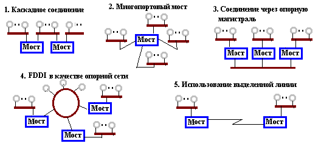
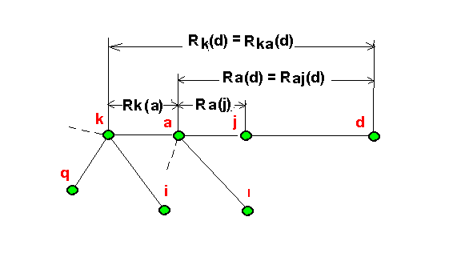
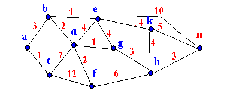
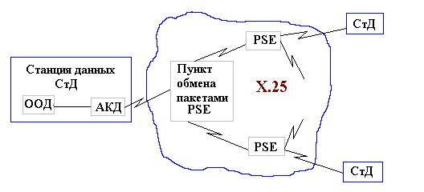
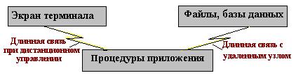
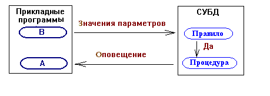
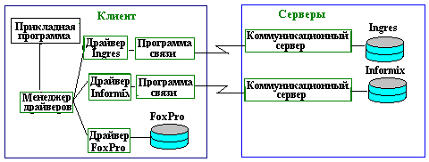
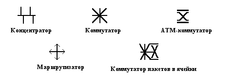
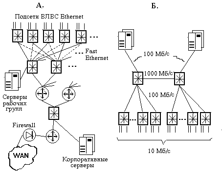

1. Транспортные и сетевые протоколы. В территориальных и корпоративных сетях со сложной разветвленной структурой для передачи сообщений от отправителя к адресату имеется много альтернативных маршрутов. Эти маршруты, как правило, включают не только конечные узлы отправителя и получателя, но и ряд промежуточных узлов и сетей.
Проблема обеспечения передачи информации между сетями, т.е. проблема обеспечения взаимодействия различных сетей в составе интегрированной сети, в англоязычной литературе носит название Internetworking. Это взаимодействие выражено функциями транспортного и сетевого уровней в семиуровневой модели ISO.
Функции транспортного уровня реализуются в конечных узлах. К ним относятся:
2. Управление потоками данных в сетях. Это одна из функций сетевого уровня, включающая управление нагрузками и борьбу с блокировками. Различают несколько уровней управления.
Межузловое управление связано с распределением буферной памяти в промежуточных узлах (выделением каждому направлению определенного числа буферов), сводящееся к ограничению длин канальных очередей.
Управление "вход-выход" направлено на предотвращение блокировок. Реализуется указанием в первом пакете сообщения его длины, что позволяет приемному узлу прогнозировать заполнение памяти и запрещать прием дейтаграмм определенных сообщений, если прогнозируется блокировка памяти.
Управление внешними потоками (доступом) реализуется путем предоставления приоритета в передаче внутренним потокам перед внешними, ограничением числа пакетов в сети (пакет принимается, если у узла есть соответствующее разрешение), посылкой предупредительных пакетов-заглушек в адрес источника, от которого идут пакеты в перегруженную линию связи.
3. Мостовые соединения. Серверы делятся на функциональные и на серверы доступа. Последние входят в число блоков взаимодействия сетей (подсетей).
Блоком взаимодействия называют функциональный блок, обеспечивающий взаимодействие нескольких информационных сетей или подсетей. К блокам взаимодействия относятся повторители, мосты, маршрутизаторы, шлюзы, концентраторы, модемы и др.
Повторитель (repeater) - блок взаимодействия, служащий для регенерации электрических сигналов, передаваемых между двумя сегментами ЛВС. Повторители используются, если реализация ЛВС на одном сегменте кабеля (отрезке, моноканале) не допускается из-за ограничений на расстояние или на число узлов, причем при условии, что в соседних сегментах используются один и тот же метод доступа и одни и те же протоколы. Трафик в сегментах, соединенных повторителем, - общий. Повторитель может быть многопортовым. Сигнал, пришедший на один из портов, повторяется на всех остальных портах.
Мост (bridge) - блок взаимодействия, служащий для соединения разных подсетей, которые могут иметь неодинаковые канальные протоколы.
При малых расстояниях между подсетями связь возможна через серверы подсетей, в которых размещаются интерфейсные платы, называемые внутренними мостами, и соответствующее сетевое программное обеспечение. При этом предполагается использование подсетей с идентичными протоколами, например, IPX, иначе нужно использовать маршрутизаторы или шлюзы. В частности, высокопроизводительную ЭВМ подключают к ЛВС через выделяемую для этих целей машину-шлюз. Возможно применение внешних мостов - специально выделяемых узлов для целей сопряжения по одному в каждой из соединяемых подсетей. Внешние мосты обходятся дороже, но обеспечивают лучшие эксплуатационные характеристики. Важная функция мостов - ограничение трафика, так как локальный трафик одной подсети замыкается в ней, не проходя в другую подсеть.
Обычно мост имеет два порта, хотя существуют и многопортовые мосты. Каждый порт может оказаться входным или выходным. Управление передачей пакетов выполняется с помощью маршрутной таблицы моста, в которой строки содержат соответствующие друг другу значения адреса узла и номера порта моста. Если пакет пришел на порт А и по таблице адрес относится к тому же порту А, то пакет остается в данной ЛВС, иначе передается на порт В, который найден по таблице. Первоначальное заполнение таблицы происходит по адресам источников пакетов - в строку заносятся адрес отправителя и номер входного порта. Таблицы могут изменять во времени свое содержимое. Если некоторые адреса по истечении длительного времени ни разу не активировались, то строки с такими адресами удаляются, их восстановление или занесение новых адресов выполняется по процедуре первоначального заполнения. Для сетей с многопутевой топологией возможно применение лавинного алгоритма.

Вариант 2 обеспечивает большую пропускную способность по сравнению с вариантом 1. Вариант 3 близок к варианту 2 по пропускной способности, он дороже, но именно он должен применяться, если расстояния между подсетями довольно большие. Вариант 4 используется для увеличения скорости при большом трафике. Наконец, вариант 5 предназначен для случаев расстояний в несколько километров и более.
В зависимости от выполняемых функций различают несколько типов мостов.
Так называемый прозрачный (transparent) мост соединяет однотипные подсети. Для определения местоположения узла мост имеет таблицу MAC-адресов, заполняемую администратором или автоматически в процессе широковещательной отсылки пакетов.
Транслирующие мосты соединяют сети с разными канальными протоколами, конвертируя пакеты (но необходимо, чтобы размеры пакетов были приемлемы для обеих сетей).
Инкапсулирующий мост отличается от прозрачного тем, что передача ведется через некоторую промежуточную сеть, имеющую, возможно, другие канальные протоколы (например, пересылка между Ethernet подсетями через опорную сеть FDDI). Промежуточная сеть работает широковещательно, все подсети-приемники вскрывают инкапcулированные пакеты.
Корпоративная сеть, состоящая из подсетей, связанных мостами, может быть названа автономной системой (AS - Autonomous System). Связь одной AS с другими осуществляется через маршрутизатор или шлюз. Такой маршрутизатор называют пограничным. В качестве AS можно рассматривать и более сложную совокупность связанных AS, если эта совокупность имеет выход во внешние сети опять же через пограничный маршрутизатор (шлюз). Из сказанного следует, что структура глобальных сетей является иерархической.
4. Маршрутизация. Цель маршрутизации - доставка пакетов по назначению с максимизацией эффективности. Чаще всего эффективность выражена взвешенной суммой времен доставки сообщений при ограничении снизу на вероятность доставки. Маршрутизация сводится к определению направлений движения пакетов в маршрутизаторах. Выбор одного из возможных в маршрутизаторе направлений зависит от текущей топологии сети (она может меняться хотя бы из-за временного выхода некоторых узлов из строя), длин очередей в узлах коммутации, интенсивности входных потоков и т.п.
Алгоритмы маршрутизации включают процедуры:
- измерение и оценивание параметров сети;
- принятие решения о рассылке служебной информации;
- расчет таблиц маршрутизации (ТМ);
- реализация принятых маршрутных решений.
В зависимости от того, используется ли при выборе направления информация о состоянии только данного узла или всей сети, различают алгоритмы изолированные и глобальные. Если ТМ реагируют на изменения состояния сети, то алгоритм адаптивный, иначе фиксированный (статический), а при редких корректировках - квазистатический. В статических маршрутизаторах изменения в ТМ вносит администратор сети.
Простейший алгоритм - изолированный, статический. Алгоритм кратчайшей очереди в отличие от простейшего является адаптивным, пакет посылается по направлению, в котором наименьшая очередь в данном узле. Лавинный алгоритм - многопутевой, основан на рассылке копий пакета по всем направлениям, пакеты сбрасываются, если в данном узле другая копия уже проходила. Очевидно, что лавинный алгоритм обеспечивает надежную доставку, но порождает значительный трафик и потому используется только для отдельных пакетов большой ценности.
Наиболее широко используемые протоколы маршрутизации - RIP (Routing Information Protocol) и OSPF (Open Shortest Path First). Метод RIP иначе называется методом рельефов. Он основан на алгоритме Беллмана-Форда и используется преимущественно на нижних уровнях иерархии. OSPF - алгоритм динамической маршрутизации, в котором информация о любом изменении в сети рассылается лавинообразно.
Алгоритм Беллмана-Форда относится к алгоритмам DVA (Distance Vector Algorithms). В DVA рельеф Ra(d) - это оценка кратчайшего пути от узла a к узлу d. Оценка (условно назовем ее расстоянием) может выражаться временем доставки, надежностью доставки или числом узлов коммутации (измерение в хопах) на данном маршруте. В ТМ узла а каждому из остальных узлов отводится одна строка со следующей информацией:
- узел назначения;
- длина кратчайшего пути;
- номер N ближайшего узла, соответствующего кратчайшему пути;
- список рельефов от а к d через каждый из смежных узлов.

d Ra(d) N(d) = j Raj(d) Rak(d) ...
Пусть изменилась задержка Rak(d) причем так, что Rak(d) стало меньше, чем Raj(d). Тогда в строке d таблицы маршрутизации узла а корректируется Ra(d), N(d) изменяется на k и, кроме того, всем соседям узла а посылается сообщение об измененном Ra(d). Например, в некотором соседнем узле l при этом будет изменено значение Rla(d) = Ra(d) + Rl(a). Мы видим, что возникает итерационный процесс корректировки маршрутной информации в узлах маршрутизации.
Хотя алгоритм Беллмана-Форда сходится медленно, для сетей сравнительно небольших масштабов он вполне приемлем. В больших сетях лучше себя зарекомендовал алгоритм OSPF. Он основан на использовании в каждом маршрутизаторе информации о состоянии всей сети. В основе OSPF лежит алгоритм Дийкстры поиска кратчайшего пути в графах. При этом сеть моделируется графом, в котором узлы соответствуют маршрутизаторам, а ребра - каналам связи. Веса ребер - оценки (расстояния) между инцидентными узлами. Рассмотрим итерационный алгоритм Дийкстры применительно к формированию маршрутной таблицы в узле а графа, показанного на рис. 5.3 (числа показывают веса ребер).

Итерационный процесс начинается с отнесения узла а к группе перманентных. Далее определяются узлы, смежные с узлом а. Это узлы b и c, которые включаются в группу пробных. Включение в группу пробных отмечается указанием в клетке таблицы рядом с оценкой расстояния пробного узла также имени узла, включаемого на этом шаге в число перманентных. Так, для узлов b и c определяются расстояния Rb = 3, Rc = 1 и в для них в таблице отмечается узел а. На следующем шаге узел с минимальной оценкой (в примере это узел с) включается в группу перманентных, а узлы, смежные с узлом с, - в группу пробных, для них оцениваются расстояния Rd = 8 и Rf = 13 и они помечаются символом с. Теперь среди пробных узлов минимальную оценку имеет узел b, он включается в группу перманентных узлов, узел е - в группу пробных и для всех пробных узлов, смежных с b, рассчитываются оценки. Это, в частности, приводит к уменьшению оценки узла d с 8 на 5. Акт уменьшения фиксируется (в таблице это отражено, во-первых, подчеркиванием, а во-вторых, заменой у узла d метки c на b). Если же новая оценка оказывается больше прежней, то она игнорируется. Этот процесс продолжается, пока все узлы не окажутся в группе перманентных. Теперь виден кратчайший путь от узла а к любому другому узлу Х или, что то же самое, от Х к а. Это последовательность конечных отметок в строках таблицы, начиная с последнего узла Х. Так, для узла Х = n имеем в строке n отметку h, в строке h - отметку g, в строке g- отметку d и т.д. и окончательно кратчайший путь есть a-b-d-g-h-n.
|
Номер итерации
|
1
|
2
|
3
|
4
|
5
|
6
|
7
|
8
|
9
|
10
|
|
b
|
3,a
|
3
|
||||||||
|
c
|
1,a
|
|||||||||
|
d
|
8,c
|
5,b
|
||||||||
|
e
|
7,b
|
7
|
7
|
|||||||
|
f
|
13,c
|
13
|
7,d
|
7
|
7
|
|||||
|
g
|
6,d
|
|||||||||
|
h
|
9,g
|
9
|
9
|
|||||||
|
k
|
11,e
|
11
|
11
|
|||||||
|
n
|
17,e
|
17
|
12,h
|
12
|
5. Транспортный протокол ТСР в стеке протоколов TCP/IP. Эти протоколы берут свое начало от одной из первых территориальных сетей ARPANET. Они получили широкое распространение благодаря реализации в ОС Unix и в сети Internet и в настоящее время оформлены в виде стандартов RFC (Requests For Comments) организацией IETF (Internet Engineering Task Force).
TCP/IP - пятиуровневые протоколы, но основными среди них, давшими название всей совокупности, являются протоколы сетевого (IP - Internet Protocol) и транспортного (TCP - Transpоrt Control Protocol) уровней.
TCP - дуплексный транспортный протокол с установлением соединения. Его функции: упаковка и распаковка пакетов на концах транспортного соединения; установление виртуального канала путем обмена запросом и согласием на соединение; управление потоком - получатель при подтверждении правильности передачи сообщает размер окна, т.е. диапазон номеров пакетов, которые получатель готов принять; помещение срочных данных между специальными указателями, т.е. возможность управлять скоростью передачи.
В TCP имеется программа-демон, которая постоянно готова к работе и при приходе запроса генерирует свою копию для обслуживания создаваемого соединения, а сама программа-родитель ждет новых вызовов.
Схема установления соединения в одноранговых сетях такова: инициатор соединения обращается к своей ОС, которая в ответ выдает номер протокольного порта и посылает сегмент получателю. Тот должен подтвердить получение запроса и послать свой сегмент-запрос на создание обратного соединения (так как соединение дуплексное). Инициатор должен подтвердить создание обратного соединения. Получается трехшаговая процедура (handshake) установления соединения. Во время этих обменов партнеры сообщают номера байтов в потоках данных, с которых начинаются сообщения. На противоположной стороне счетчики устанавливаются в состояние на единицу больше, чем и обеспечивается механизм синхронизации в дейтаграммной передаче, реализуемой на сетевом уровне. После установления соединения начинается обмен. При этом номера протокольных портов включаются в заголовок пакета. Каждое соединение (socket) получает свой идентификатор ISN. Разъединение происходит в обратном порядке.
Примечание: ISN в TCP/IP не используется, но предусмотрен в UNIX, так как может потребоваться в лругих протоколах.
Схема установления соединения в сетях "клиент-сервер" аналогична (за исключением handshake) и включает посылку клиентом запроса на соединение (команда ACTIVE_OPEN) с указанием адреса сервера, тайм-аута (времени жизни), уровня секретности. Можно сразу же поместить в запрос данные (тогда команда ACTIVE_OPEN_WITH_DATA). Если сервер готов к связи, он отвечает командой согласия (OPEN_RECEIVED), в которой назначает номер соединения. Далее командой SEND посылаются данные, а командой DELIVER подтверждается их получение. Разъединение выполняется обменом командами CLOSE и CLOSING.
Структура ТСР-пакета (в скобках указано число битов):
Еще более жесткое ограничение возникает из-за представления размера окна всего 16-ю битами. Это ограничение заключается в том, что за время Tv прохождения пакета от отправителя к получателю и обратно в сеть может быть направлено не более 216 информационных единиц конкретного сообщения. Поскольку обычно такой единицей является байт, то имеем (216*8 бит) / Tv . Так, для каналов со спутниками на геостационарных орбитах Tv составляет около 0,5 с и ограничение скорости будет около 1 Мбит/с. Заметно увеличить этот предел можно, если в качестве информационной единицы использовать С байт, С>1.
В ТСР повторная передача пакета происходит, если в течение оговоренного интервала времени Тm (тайм-аута) не пришло положительное подтверждение. Следовательно, не нужно посылать отрицательные квитанции. Обычно Tm=2*t , где t - некоторая оценка времени прохождения пакета туда и обратно. Это время периодически корректируется по результату измерения Tv, а именно
t := 0,9*t + 0,1*Tv.
Попытки повторных передач пакета не могут продолжаться бесконечно, и при превышении интервала времени, устанавливаемого в пределах 0,5...2,0 мин, соединение разрывается.
Размер окна регулируется следующим образом. Если сразу же после установления соединения выбрать завышенный размер окна, что означает разрешение посылки пакетов с высокой интенсивностью, то велика вероятность появления перегрузки определенных участков сети. Поэтому используется алгоритм так называемого медленного старта. Сначала посылается один пакет и после подтверждения его приема окно увеличивается на единицу, т.е. посылаются два пакета. Если вновь положительное подтверждение (потерь пакетов нет), то посылаются уже четыре пакета и т.д. Скорость растет, пока пакеты проходят успешно. При потере пакета или при приходе от протокола управления сигнала о перегрузке размер окна уменьшается и далее опять возобновляется процедура линейного роста размера окна. Медленный старт снижает информационную скорость, особенно при пересылке коротких пакетов, поэтому стараются применять те или иные приемы его улучшения.
6. Коммутационное оборудование. Маршрутизатор (router) - блок взаимодействия, служащий для выбора маршрута передачи данных в корпоративных и территориальных сетях. С помощью маршрутизаторов могут согласовываться не только канальные протоколы, как это имеет место при применении мостов, но и сетевые протоколы. Маршрутизаторы содержат таблицы и протоколы маршрутизации в отличие от других узлов (узлы, имеющие адреса и, следовательно, доступные по сети, называют хостами), которые могут содержать лишь локальные таблицы соответствия IP-адресов физическим адресам сетевых контроллеров в локальной сети.
Шлюз (gateway - межсетевой преобразователь) - блок взаимодействия, служащий для соединения информационных сетей различной архитектуры и с неодинаковыми протоколами. В шлюзах предусматривается согласование протоколов всех семи уровней ЭМВОС. Примерами шлюзов могут быть устройства, соединяющие ЛВС типа Ethernet с сетью SNA, используемой для связи больших машин фирмы IBM. Часто под шлюзом понимают сервер, имеющий единственный внешний канал передачи данных.
Концентраторы предназначены для объединения в сеть многих узлов. Так, концентраторами являются хабы в 10Base-T или Token Ring. Хабы могут быть пассивными или активными, в последнем случае в хабе имеются усилители-формирователи подводимых сигналов. Однако такие концентраторы создают общую среду передачи данных без разделения трафика.
Коммутаторы в отличие от концентраторов предназначены для объединения в сеть многих узлов или подсетей с возможностью создания одновременно многих соединений. Они называются также переключателями (свитчами - switches). Коммутаторы используются также для связи нескольких ЛВС с территориальной сетью. Один коммутатор может объединять несколько как однотипных, так и разнотипных ЛВС.
Использование коммутаторов вместо маршрутизаторов (там, где это возможно) позволяет существенно повысить пропускную способность сети. Коммутатор работает с локальными МАС-адресами, в нем имеется таблица соответствия МАС-адресов и портов. Кроме того, между разными портами коммутатора образуется несколько соединений, по которым пакеты могут передаваться одновременно. .В то же время маршрутизатор оперирует IP-адресами и таблицами маршрутизации и выполняет сложные алгоритмы маршрутизации.
Возможны коммутация "на лету" (сквозная коммутация - out-trough) , когда передача пакета начинается сразу после расшифровки заголовка, и с полным получением пакета (промежуточная буферизация - store-and-forward). Первый способ применяют в небольших сетях, второй - в магистральных коммутаторах. Сквозная коммутация позволяет обойтись малым объемом буфера, но не дает возможности контролировать безошибочность передачи данных.
Обычно коммутатор имеет системную плату, ряд портов, группируемых в сегменты, систему коммутации портов и функциональные модули. Каждый сегмент ориентирован на ЛВС одного типа. Так, коммутатор ODS Infinity фирмы OpticalData Systems имеет в своем составе сегменты для сетей типов Ethernet, Token Ring, FDDI, LocalTalk, причем в этих сегментах имеются гнезда для подключения соответственно 48, 48, 2 и 6 сетей. Порты соединяются посредством высокоскоростной общей шины (что более характерно для многопортовых мостов), но чаще через коммутирующую матрицу. Функциональные модули предназначены для связи сегментов и выхода в территориальную сеть.
Различают коммутаторы 2-го и 3-го уровней. Сети с коммутаторами 2-го уровня подвержены так называемому широковещательному шторму, поскольку при широковещательной передаче пакеты направляются во все подсети, соединенные через коммутаторы, и сеть будет "забита" пакетами. Чтобы уменьшить отрицательное влияние такого шторма, сеть разбивают на подсети, в пределах которых и осуществляется широковещательность. Коммутатор 3-го уровня разделяет подсети, направляя через себя пакет только, если МАС-адрес получателя относится к другой подсети.
Обычно распределение узлов по подсетям выполняется по территориальному признаку. Однако при этом возможно объединение в одной подсети узлов, слабо связанных друг с другом в функциональном отношении. Возникают проблемы с защитой информации и с управлением трафиком. Поэтому предпочтительнее распределять узлы по функциональному признаку, причем администратор сети должен иметь возможность перекоммутации узлов при изменениях в их функциях или расположении. Такие возможности имеются в виртуальных ЛВС.
Виртуальная ЛВС (ВЛВС) - это локальная сеть, в которой узлы группируются не по территориальному, а по функциональному признаку. Для этого каждая подсеть в ВЛВС получает свой идентификатор, каждому идентификатору соответствуют определенные порты коммутаторов сети. Идентификатор указывается в заголовке кадра (структура кадра в ВЛВС задается стандартом IEEE 802.10) и поэтому коммутатор направляет кадр в нужную подсеть. Администратор сети может управлять структурой сети (перекоммутацией портов) с помощью специального ПО.
Лидером в производстве коммутаторов для ВЛВС является фирма Cisco. Ее коммутаторы семейства Catalyst допускают объединение в ВЛВС до 1024 подсетей FDDI, E, TR, ATM. Встроенные программы управления позволяют закреплять любой порт за любой подсетью.
К блокам взаимодействия относят также модемы, мультиплексоры и демультиплексоры - устройства для преобразования сообщений в кадры TDM (временное мультиплексирование) и обратно.
7. Сетевой протокол IP в стеке протоколов TCP/IP. IP - дейтаграммный сетевой протокол без установления соединения. Его функции: фрагментация и сборка пакетов при прохождении через промежуточные сети, имеющие другие протоколы; маршрутизация; проверка контрольной суммы заголовка пакета (правильность передачи всего пакета проверяется на транспортном уровне, т.е. с помощью TCP, в оконечном узле); управление потоком - сброс дейтаграмм при превышении заданного времени жизни.
Структура дейтаграммы в IP (в скобках указано число битов):
В поле "Тип сервиса" отмечается приоритет (если приоритетность используется), можно указать одно из следующих требований: минимальная задержка, высокая надежность, низкая цена передачи данных.
Всего в сети одновременно может быть 216 = 65 тысяч дейтаграмм сообщения с разными идентификаторами, т.е. за отрезок времени, равный времени жизни дейтаграммы, может быть передано не более 216 дейтаграмм. Это один из факторов, ограничивающих пропускную способность сетей с протоколом IP. Действительно, при времени жизни в 120 с имеем предельную скорость 216/ 120 = 546 дейтаграмм в секунду, что при размере дейтаграммы до 65 тысяч байт дает ограничение скорости приблизительно в 300 Мбит/с (такое же значение одного из ограничений предельной скорости получено выше и для протокола ТСР).
Время жизни может измеряться как в единицах времени Т , так и в хопах Р (числом пройденных маршрутизаторов). В первом случае контроль ведется по записанному в заголовке значению Т, которое уменьшается на единицу каждую секунду. Во втором случае каждый маршрутизатор уменьшает число Р, записанное в поле "Время жизни", на единицу. При Т = 0 или при Р = 0 дейтаграмма сбрасывается.
Поле "Тип протокола" определяет структуру данных в дейтаграмме. Примерами протоколов могут служить UDP, SNA, IGP и т.п.
Поле "Опции" в настоящее время рассматривается как резервное.
8. Другие протоколы в стеке TCP/IP. В состав протокола IP входит ряд частных протоколов. Среди них протоколы ARP, IGP, EGP, относящиеся к маршрутизации на разных иерархических уровнях в архитектуре сети. На одном уровне с IP находится протокол управления ICMP (Internet Control Message Protocol).
Протокол ARP (Address Resolution Protocol) относится к связям "хост-хост" или "хост-шлюз" в конкретной подсети. Он использует локальные таблицы маршрутизации - ARP-таблицы, устанавливающие соответствие IP-адресов с NPA (Network Point of Attachment) адресами серверов доступа в соответствующих подсетях. В подсетях не нужно рассчитывать кратчайший путь и определять маршрут в разветвленной сети, что, естественно, ускоряет доставку. ARP-таблицы имеются в каждом узле. Если в таблице отправителя нет строки для IP-адреса получателя, то отправитель сначала посылает широковещательный запрос. Если некоторый узел имеет этот IP-адрес, он откликается своим NPA, и отправитель пополняет свою таблицу и отсылает пакет. Иначе отправка пакета произойдет на внешний порт сети.
Протокол IGP (Interior Dateway Pr.) предназначен для управления маршрутизацией в некотором домене (автономной сети - AS), т.е. он определяет маршруты между внутренними сетями домена. Другими словами, в AS имеется (или может быть получена) информация о путях ко всем сетям домена, и протокол IGP доставляет дейтаграмму в нужную подсеть в соответствии с алгоритмом маршрутизации RIP или OSPF.
Протокол EGP (Exterior Gateway Pr.) относится к корневой сети и предназначен для управления маршрутизацией между внешними шлюзами и пограничными маршрутизаторами доменов.
В TCP/IP входит также протокол UDP (User Datagram Protocol) - транспортный протокол без установления соединения, он значительно проще TCP, но используется чаще всего для сообщений, умещающихся в один пакет. После оформления UDP-пакета он передается с помощью средств IP к адресату, который по заголовку IP-пакета определяет тип протокола и передает пакет не агенту ТСР, а агенту UDP. Агент определяет номер порта и ставит пакет в очередь к этому порту. В UDP служебная часть дейтаграммы короче, чем в ТСР (8 байт вместо 20), не требуется предварительного установления соединения или подтверждения правильности передачи, как это делается в TCP, что и обеспечивает большую скорость за счет снижения надежности доставки.
Структура UDP-дейтаграммы (в скобках указано число битов):
- SMTP (Simple Mail Transport Protocol) - почтовый протокол, который по классификации ISO можно было бы отнести к прикладному уровню;
- FTP (File Transfer Protocol) - протокол с функциями представительного уровня;
- Telnet - протокол с функциями сеансового уровня.
Протоколы TCP/IP являются основными протоколами сети Internet, они поддерживаются операционными системами Unix и Windows NT.
На нижних уровнях в TCP/IP используется протокол IEEE 802.X или X.25.
9. Адресация в TCP/IP (в Internet). Различают два типа адресов. На канальном уровне используют адреса, называемые физическими. Это шестибайтовые адреса сетевых плат, присваиваемые изготовителем контроллеров (каждый изготовитель вместе с лицензией на изготовление получает уникальный диапазон адресов). На сетевом уровне используют сетевые адреса, иначе называемые виртуальными, или логическими. Эти адреса имеют иерархическую структуру, для них существуют цифровое и буквенное выражения.
Узлы в Internet имеют адрес и имя. Адрес - уникальная совокупность чисел: адреса сети и компьютера (хоста - узла в cети), которая указывает их местоположение. Имя характеризует пользователя. Оно составляется в соответствии с доменной системой имен. Соответствие между IP-адресом и IP-именем хоста устанавливается специальной службой директорий. В Internet это DNS (Domain Name Service), в ISO - стандарт X.500.
IP-имя, называемое также доменным именем, - удобное для человека название узла или сети. Имя отражает иерархическое построение глобальных сетей и потому состоит из нескольких частей (аналогично обычным почтовым адресам). Корень иеарахии обозначает либо страну, либо отрасль знаний, например: ru - Россия, us - США, de - Германия, uk - Великобритания, edu - наука и образование, com - коммерческие организации, org - некоммерческие организации, gov - правительственные организации, mil - военные ведомства, net - служба поддержки Internet и т.д. Корень занимает в IP-имени правую позицию, левее записываются локальные части адреса и, наконец, перед символом @ указывается имя почтового ящика пользователя. Так, запись norenkov@rk6.bmstu.ru расшифровывается, как пользователь norenkov в подразделении rk6 организации bmstu в стране ru. В 1997 г. число используемых доменных имен в сети Internet превысило один миллион.
IP-адрес - 32-битовое слово, записываемое в виде четырех частей (побайтно), разделенных точками. Каждые подсеть и узел в подсети получают свои номера, причем для сети (подсети) может использоваться от одного до трех старших байтов, а оставшиеся байты - для номера узла. Какая часть IP-адреса относится к сети, определяется ее маской, выделяющей соответствующие биты в IP-адресе. Например, для некоторой сети маска может быть 255.0.0.0, а для ее подсети - 255.255.0.0 и т.д. Тем самым описывается иерархия сетей.
Номера при включении нового хоста выдает организация, предоставляющая телекоммуникационные услуги и называемая провайдером. Провайдер, в частности, обеспечивает включение IP-адреса и соответствующего ему IP-имени в сервер службы адресов DNS. Это означает запись данных о хосте в DIB (Directory Information Base) локального узла DNS.
При маршрутизации имя переводится в адрес с помощью серверов DNS (Domain Name Service). Поскольку маршрутизация в сети осуществляется по IP-адресам, то перевод указанного пользователем IP-имени в IP-адрес с помощью DNS обязателен.
Сценарий работы с DNS иллюстрирует рис. 5.4.
Корневых серверов в Internet в 1995 г. было всего семь. Число уровней может быть большим. В каждой зоне (поддереве) сервер дублируется, его содержимое реплицируется через определенные промежутки времени.
10. Протоколы управления в стеке TCP/IP. Рост сложности сетей повышает значимость и сложность средств управления сетью.
Среди протоколов управления различают протоколы, реализующие управляющие функции сетевого уровня, и протоколы мониторинга за состоянием сети, относящиеся к более высоким уровням. В сетях ТСР/IP роль первых из них выполняет протокол ICMP , роль вторых - протокол SNMP (Simple Network Management Protocol).
Основные функции ICMP:
Основные функции протоколов мониторинга заключаются в сборе информации о состоянии сети, в предоставлении этой информации нужным лицам путем посылки ее на соответствующие узлы, в возможном автоматическом принятии необходимых управляющих мер.
Собственно собираемая информация о состоянии сети хранится в базе данных под названием MIB (Managment Information Base). Примеры данных в MIB: статистика по числу пакетов и байтов, отправленных или полученных правильно или с ошибками, длины очередей, максимальное число соединений и др.
Протокол SNMP относится к прикладному уровню в стеке протоколов TCP/IP. Он работает по системе "менеджер-агент". Менеджер (серверная программа SNMP) посылает запросы агентам, агенты (т.е. программы SNMP объектов управления) устанавливаются в контролируемых узлах, они собирают информацию (например, о загрузке, очередях, временах совершения событий), и передают ее серверу для принятия нужных мер. В общем случае агентам можно поручить и обработку событий, и автоматическое реагирование на них. Для этого в агентах имеются триггеры, фиксирующие наступление событий, и средства их обработки. Команды SNMP могут запрашивать значения объектов MIB, посылать ответы, менять значения параметров.
Для посылки команд SNMP используется транспортный протокол UDP.
Одной из проблем управления по SNMP является защита агентов и менеджеров от ложных команд и ответов, которые могут дезорганизовать работу сети. Используется шифрование сообщений, но это снижает скорость реакции сети на происходящие события.
Расширением SNMP являются протоколы RMON (Remote Monitoring) для сетей Ethernet и Token Ring и RMON2 для сетевого уровня. Преимущество RMON заключается в меньшем трафике, так как здесь агенты более самостоятельны и сами выполняют часть необходимых управляющих воздействий на состояние контролируемых ими узлов.
На базе протокола SNMP разработан ряд мощных средств управления, примерами которых могут служить продукт ManageWISE фирмы Novell или система UnicenterTNG фирмы Computer Associates. С их помощью администратор сети может: 1) строить 2D изображение топологии сети, причем на разных иерархических уровнях, перемещаясь от региональных масштабов до подсетей ЛВС (при интерактивной работе); 2) разделять сеть на домены управления по функциональным, географическим или другим принципам с установлением своей политики управления в каждом домене; 3) разрабатывать нестандартные агенты с помощью имеющихся инструментальных средств.
Дальнейшее развитие подобных систем может идти в направлении связи сетевых ресурсов с проектными или бизнес-процедурами и сетевых событий с событиями в процессе проектирования или управлении предприятиями. Тогда система управления сетью станет комплексной системой управления процессами проектирования и управления предприятием.
11. Протоколы SPX/IPX. Это система протоколов, разработанная фирмой Novell для сетей Novell Netware.
Адрес получателя в пакете IPX состоит из номера сети (фактически номера сервера), адреса узла (это имя сетевого адаптера) и имени гнезда (прикладной программы). Пакет имеет заголовок в 30 байт и блок данных длиной до 546 байт. В пакете SPX заголовок включает 42 байт, т.е. блок данных не более 534 байт.
Установление виртуального соединения в SPX (создание сессии) заключается в посылке клиентом запроса connect, возможная реакция сервера - connected (успех) или disconnected (отказ). Запрос на разъединение возможен как от сервера, так и от клиента.
После установления соединения передача ведется по дейтаграммному протоколу IPX.
12. Сети передачи данных с коммутацией пакетов Х.25. Сети Х.25 относятся к первому поколению сетей коммутации пакетов. Протоколы Х.25 разработаны ITU еще в 1976 г. В свое время они получили широкое распространение, а в России их популярность остается значительной и в 90-е годы, поскольку эти сети хорошо приспособлены к работе на телефонных каналах невысокого качества, составляющих в России значительную долю каналов связи. С помощью сетей Х.25 удобно соединять локальные сети в территориальную сеть, устанавливая между ними мосты Х.25.
Стандарт Х.25 относится к трем нижним уровням ЭМВОС, т.е. включает протоколы физического, канального и сетевого уровней. На сетевом уровне используется коммутация пакетов.
Характеристики сети:
При использовании на физическом уровне телефонных каналов для подключения к сети достаточно иметь компьютер и модем. Подключение осуществляет провайдер (провайдерами являются, например, владельцы ресурсов сетей Sprint, Infotel, Роспак и др.)
Типичная структура сети Х.25 показана на рис. 5.5.

13. Сети Frame Relay (FR). Это сети пакетной коммутации. В них в отличие от сетей Х.25 обеспечивается большая скорость за счет исключения контроля ошибок в промежуточных узлах, так как контроль, адресация, инкапсуляция и восстановление выполняются в оконечных пунктах, т.е. на транспортном уровне. В промежуточных узлах ошибочные пакеты могут только отбрасываться, а запрос на повторную передачу происходит от конечного узла средствами уровня, выше сетевого. Но для реализации FR нужны помехоустойчивые каналы передачи данных.
Другая особенность - пункты доступа фиксируются при настройке порта подключения к сети. Поэтому наиболее подходящая сфера применения FR - объединение совокупности ЛВС, находящихся на значительном расстоянии друг от друга.
В сетях FR применена маршрутизация от источника, сигнализация о перегрузках осуществляется вставкой соответствующих битов в заголовок пакетов, проходящих по перегруженному маршруту, управление потоками предусматривает динамическое распределение полосы пропускания между соединениями. Поэтому возможна, в отличие от сетей Х.25, не только передача данных, но и передача оцифрованного голоса (так как для передачи голоса обычно требуется режим реального времени). По этой же причине FR лучше приспособлены для передачи неравномерного трафика, характерного для связей между ЛВС.
Сети FR также получают широкое распространение в России по мере развития помехоустойчивых каналов связи, так как облегчен переход к ним от сетей Х.25.
Но радикальное повышение скоростей передачи интегрированной информации связывают с внедрением сетей АТМ.
14. Сети АТМ. Перспективными технологиями передачи информации в вычислительных сетях являются технологии, обеспечивающие высокие скорости передачи разнородной информации (данных, речевых и видеосигналов) на значительные расстояния. Действительно, передача голосовой и видеоинформации обычно требуется в режиме реального времени, и, следовательно, задержки должны быть только малыми (так, для голосовой связи - около 6 с).
К числу таких технологий прежде всего относится технология АТМ (Asynchronous Transfer Mode).
Технология АТМ кратко формулируется, как быстрая коммутация коротких пакетов фиксированной длины (53 байт), называемых ячейками. По этой причине и саму технологию АТМ иногда называют коммутацией ячеек.
Сети АТМ относят к сетям с установлением соединения. Соединения могут быть постоянными и динамическими. Первые устанавливаются и разрываются администратором сети, их действие продолжительно, для каждого нового обмена данными между абонентами постоянного соединения не нужно тратить время на его установление. Вторые устанавливаются и ликвидируются автоматически для каждого нового сеанса связи.
Каждое соединение получает свой идентификатор, который указывается в заголовке ячеек. При установлении соединения каждому коммутатору на выбранном пути следования данных передается таблица соответствия идентификаторов и портов коммутаторов. Коммутатор, распознав идентификатор, направляет ячейку в нужный порт. Непосредственное указание в заголовке адресов получателя и отправителя не требуется, заголовок короткий - всего 5 байтов.
Высокие скорости в АТМ обеспечиваются рядом технических решений.
Во-первых, большое число каналов с временным мультиплексированием (TDM) можно использовать для параллельной передачи частей одного и того же "объемного" сообщения (статистическое мультиплексирование). При этом цикл синхронизации состоит из отдельных участков, длины участка и ячейки совпадают. Под конкретное сообщение можно выделить N интервалов, совокупность которых называют виртуальным каналом. Скорость передачи можно регулировать, изменяя N. Если сеть АТМ оказывается перегруженной, то во избежание потери информации и в отличие от коммутации каналов возможна буферизация данных для выравнивания загрузки каналов. Регулирование загрузки (управление потоком) осуществляется периодическим включением (обычно через 32 кадра) RM-ячейки в информационный поток. В эту ячейку промежуточные коммутаторы и конечный узел могут вставлять значения управляющих битов, сигнализирующие о перегрузке или недогрузке канала. RM-ячейка от конечного узла передается в обратном направлении источнику сообщения, который может соответственно изменить режим передачи. В частности, применяется режим занятия всех свободных ресурсов при перегрузке. Таким образом, происходит динамическое перераспределение нагрузки.
Во-вторых, отрицательные квитанции при искажениях собственно сообщений (но не заголовков) возможны только от конечного пункта. Это исключает потери времени в промежуточных пунктах на ожидание подтверждений. Такой способ иногда называют коммутацией кадров (в отличие от коммутации пакетов). Контрольный код (четырехбайтный циклический) по информационной части сообщения имеется только в конце последнего пакета сообщения.
В-третьих, упрощена маршрутизация. Собственно установление соединения выполняется аналогично этой процедуре в TCP/IP. Однако далее номер рассчитанного маршрута помещается в заголовок каждого пакета, и для них не нужно заново определять маршрут по таблицам маршрутизаторов при прохождении через сеть. Такая передача называется маршрутизацией от источника. Другими словами, осуществляется передача с установлением соединения (в отличие, например, от IP). При этом клиент направляет серверу запрос в виде специального управляющего кадра. Кадр проходит через промежуточные маршрутизаторы и/или коммутаторы, в которых соединению (каналу) присваивается номер VCI (идентификатор) маршрута. Если передача адресована нескольким узлам, то соответствующий VCI в коммутаторах присваивается нескольким каналам.
В-четвертых, фиксированная длина пакетов (кадров) упрощает алгоритмы управления и буферизации данных, исключает необходимость инкапсуляции или конвертирования пакетов при смене форматов в промежуточных сетях (если они соответствуют формату ячейки АТМ).
Типично использование переключателей (switches). Они объединяются в опорную сеть (обычно на базе ВОЛС) и обеспечивают высокоскоростную коммутацию блоков взаимодействия с различными ЛВС (возможно и отдельных компьютеров), а также связь с территориальной сетью.
Рис. 5.6. Уровни протоколов в технологии АТМ
В АТМ предусматриваются следующие варианты каналов ОС-1, ОС-3, ОС-12 и ОС-48 со скоростями соответственно 51, 155, 622 и 2400 Мбит/с. К сожалению, в распространенных протоколах, таких, как TCP/IP или Х.25, пакеты имеют переменную длину, что вызывает трудности совмещения программно-аппаратных средств распространенных технологий и ATM, в связи с чем замедляется внедрение АТМ.
Поэтому в настоящее время более распространены промежуточные технологии. Таковой прежде всего является технология ретрансляции кадров (FR), в которой применена коммутация пакетов длиной в 4 Кбита с установлением соединения. Другой промежуточной технологией является SMDS (Switched Multimegabit Data Service). В SMDS используется коммутация пакетов фиксированной длины (53 байт) без установления соединения, скорость составляет 45...155 Мбит/с.
Проблемы совмещения технологий АТМ и существующих сетей решаются организацией ATM Forum и рядом промышленных фирм. Разрабатываются коммутаторы и концентраторы, обеспечивающие совместную работу АТМ магистралей, сетей, работающих по протоколам TCP/IP, и локальных сетей, таких, как Ethernet, Fast Ethernet, FDDI. В частности, разработаны спецификации IP-over-ATM и более современные MPOA (Multi-Protocol-Over-ATM), а также реализующие их средства для передачи IP-дейтаграм и пакетов, сформированных по другим протоколам, через АТМ сети.
При реализации TCP/IP поверх АТМ протоколов необходимо сохранить высокую скорость АТМ сети. Однако этому препятствуют возможные потери при передаче некоторых 53-байтных ячеек, на которые разбивается ТСР-сегмент. Такая потеря вызывает необходимость повторной передачи всех ячеек сегмента, поскольку в АТМ контроль правильности передачи.ведется по отношению ко всему сообщению (в данном случае - сегменту). Существенно сократить число повторно передаваемых ячеек позволяют специальные алгоритмы, примером которых может служить алгоритм TCP Boston.
В этом алгоритме исходная совокупность А из m ячеек трансформируется в множество В из N ячеек с помощью матрицы W размера N*m
B = W *A,
передается только подмножество By, включающее m первых ячеека из В, а на приемном конце исходная совокупность восстанавливается
A = (Wy)-1*By,
где Wy является квадратной m*m подматрицей преобразующей матрицы W, By = Wy*A, N>m. Матрица W формируется таким образом, чтобы любая ее подматрица Wy из m строк была бы невырожденной, а N выбирается так, чтобы число N-m с запасом превышало бы число потенциально теряемых ячеек в любой группе из передаваемых m ячеек. Тогда сначала передается множество By и, если от приемника получена отрицательная квитанция с указанием, что принято только k ячееек, то передатчик вместо повторной передачи всех m ячеек передает лишь m-k дополнительных ячеек из множества В.
В качестве примеров коммутационного оборудования для совместной работы АТМ и существующих локальных сетей можно назвать коммутатор ES-3810 и концентратор PowerHub фирмы Fore Systems. В ES-3810 предусмотрены 72 порта для подключения сетей Ethernet и Fast Ethernet и один или два порта для АТМ магистрали 155 Мбит/с. PowerHub 7000 имеет следующие характеристики: до 240 портов Ethernet, до 54 портов Fast Ethernet, до 16 колец FDDI, скорость передачи данных по внутренней шине 3,2 Гбит/с.
К числу новых стандартов для высокоскоростных магистралей передачи данных относятся стандарт цифровой синхронной иерархии SDH (Synchronous Digital Hierachy). SDH подразумевает использование ВОЛС в качестве линий передачи данных. Стандарт устанавливает структуру фреймов, на которые разбивается поток передаваемых данных. Эта структура названа транспортным модулем. В частности, в этот модуль могут загружаться ячейки АТМ.
Рассмотрим модуль STM-1. В нем фрейм состоит из девяти строк и 270 колонок, каждая позиция содержит один байт. В фрейме выделены три зоны. Первая зона содержит теги для разделения фреймов, для коммутации и управления потоком в промежуточных узлах (регенераторах оптических сигналов, устанавливаемых при больших длинах сегментов линии). Данные для управления в концевых узлах содержатся во второй зоне. Третья зона включает передаваемую информацию.
Информация конкретного сообщения может занимать ту или иную часть фрейма, называемую контейнером. Чем больше длина контейнера, тем выше информационная скорость. Предусмотрено несколько типов контейнеров со скоростями 1.5, 6, 45 и 140 Мбит/с (по американскому стандарту) или 2, 6, 34 и 140 Мбит/с (по европейскому). Общая скорость передачи для STM-1 равна 155,52 Мбит/с.
Кроме STM-1, в стандарте введены также модули STM-4 и STM-16 со скоростями соответственно 622 и 2488 Мбит/с.
Магистральные сети SDH можно использовать и для передачи информации по технологиям ATM или FR (ATM и FR называют в этом случае наложенными вторичными сетями). Доступ к транспортной сети осуществляется через специальные мультиплексоры.
Примером высокоскоростной сети передачи данных на основе ВОЛС может служить сеть SONET. Другой пример - московская сеть SDH, созданная фирмой МТУ-Информ. В 1997 г. в этой сети использовались кольцо STM-16 и три кольца STM-4, связанные друг с другом потоками STM-1. На периферии сети иммется 25 колец STM-1. В узлах первой очереди использованы 13 мультиплексоров SDM-16 и 59 мультиплексоров SDM-1 семейства SYNCOM, связанных ВОЛС. По каждому кольцу STM-1, STM-4, STM-16 может передаваться соответственно 63, 252 или 1008 потоков Е1, что эквивалентно 1890, 7560 или 30240 телефонным каналам. Высока надежность передачи данных, поскольку для каждого потока данных образуется два канала - основной и дублирующий, по которым одна и та же информация передается параллельно. Подключение к сети - через FR или ATM на расстояниях до 3 км. Сеть развивается, кольца STM-4 преобразуются в STM-16, число колец растет.
15. Сетевое коммуникационное оборудование (по состоянию на конец 1997 г.). Производством и поставкой коммуникационного оборудования занимается ряд фирм. К числу лидеров относятся Cisco Systems, RAD Data Communications, 3COM, Cabletron Systems и др. Это обрудование, как правило, имеет модульные конструкции, допускающие масштабирование.
Cabletron Systems развивает свою технологию SFS (Secure Fast Switching). Эта технология ориентирована на легкость создания виртуальных ЛВС (переназначения осуществляются указанием мышью соответствующих икон экрана), на эмуляцию сети АТМ в ЛВС (в частности, достигается маршрутизация от источника), на объединение различных ЛВС АТМ-магистралями. Технология поддерживается семейством коммутаторов SmartSwitch.
К числу изделий Cisco Systems относятся коммутаторы, маршрутизаторы, конверторы. Разработана фирменная операционная система Cisco IOS (Internetwork OS) для управления сетью: создания виртуальных ЛВС, оптимизации пропускной способности, сжатия данных, шифрования и т.п.
Семейство коммутаторов Catalyst включает ряд моделей. Catalyst-1200 поддерживает до 4096 МАС-адресов в своих маршрутных таблицах и используется в сетях 10Base-T, 10Base-F, FDDI. В этом семействе реализованы возможности создания виртуальных ЛВС и удаленного мониторинга по стандарту RMON (Remote Nonitoring). Catalyst-3000 работает в сетях Ethernet, 100VG-AnyLAN, ATM, ISL (Interswitch Link - связь с другими коммутаторами). Можно создать стек (матрицу) из Catalyst-3000, получая при этом пропускную способность 3,84 Гбит/с. Catalyst-5000 предназначен для центральных узлов больших неоднородных сетей и для опорных сетей, объединяющих сети TR, Ethernet, FDDI, ATM. Пропускная способность коммутатора 1,2 Гбит/с, что соответствует миллиону пакетов в секунду. Коммутатор LightStream предназначен для сетей АТМ, построен на основе высокопроизводительной коммутирующей матрицы (5 Гбит/с) и несущих модулей, у которых имеются порты SONET, STM-1, T1/E1, T3/E3, ATM.
В семействе маршрутизаторов Cisco также имеется ряд изделий, перекрывающих потребности сетей различного масштаба. Маршрутизатор Cisco-1600 предназначен для подключения малых офисов к корпоративной сети или к Internet. Маршрутизатор Cisco-2500 имеет порт Ethernet, два синхронных порта Т1/Е1, 8...16 асинхронных портов для подключения модемов и других устройств по интерфейсам типа RS-232C. Асинхронные порты позволяют подключаться к сетям Х.25, TCP/IP, выполнять функции PAD (Packet Assemly/Disassembly). Маршрутизатор Cisco-7206 предназначен для региональных центров коммутации пакетов, имеет 6 слотов с RISC-процессорами, 48 портов Ethernet, 24 порта TR, 7 - Fast Ethernet, 6 - FDDI, 3 - ATM. Пропускная способность 1,6 Гбит/с. Промежуточное положение занимают модели Cosco-4000 и Cisco-3600, используемые в качестве центральных маршрутизаторов корпоративных сетей.
На рынке имеется много разнообразных конверторов и серверов доступа к сетям. Это, в частности: 1) АТМ-конверторы, преобразующие АТМ-поток в пакеты промежуточных сетей (напнример, Е3/Т3); 2) многопротокольные переключатели (например, из Х.25 в Frame Relay и обратно или инкапсуляция для передачи через FDDI); 3) серверы доступа к корпоративной сети по каналам ISDN или по аналоговым каналам, в последнем случае сервер включает модемный пул или блок обслуживания канала CSU (Channel Service Unit), в котором аналоговый поток становится цифровым.
Важную группу оборудования представляют мультиплексоры, служащие для преобразования нескольких низкоскоростных потоков в один высокоскоростной или для образования потоков, интегрирующих голос, видео, данные. Приером первых из них является мультиплексор Megaplex-2000, создающий 1 или 2 выходных TDM-потока из нескольких десятков входных, а примером вторых - Kilomax-2000 (оба изделия от фирмы RAD Data Communications). Имеются также устройства для коммутации слотов внутри потока Е1, для преобразования Т1 в Е1 или в ISDN и обратно, для распаковки потоков Е1 и Т1 и т.п.
Фирма 3СОМ предлагает коммутаторы семейства SuperStack 2 для коммутации в сетях Ethernet 10/100/1000 Мбит/с, ATM, FDDI и др. Семейство включает около десятка моделей. Например, коммутаторы базовой линии SuperStack 2 Baseline Switch предназначены для Ethernet, имеют 12-24 порта, количество МАС-адресов 750-4000.
16. Интеллектуальные сети связи. Интеллектуальной сетью связи называют сеть, обеспечивающую доступ пользователей телефонной сети к расширенной совокупности услуг. Примерами услуг служат переадресация вызова, определение номера вызывающего абонента, получение информации о стоимости услуги и т.п. Доступ обеспечивается серверами коммутации SSP и управления услугами SCP. SSP устанавливает соединения между абонентом и банком данных услуг в соответствии с набранным номером. SCP выполняет функции обработки вызовов по предоставлению той или иной услуги.
17. Функциональные серверы. Функциональные серверы в сетях "клиент/сервер" выделяют для сосредоточения некоторых функций, требующихся многим узлам, в одном узле, что устраняет дублирование тех или иных программно-аппаратных средств во многих узлах.
В зависимости от потребностей в таких функциях и стоимости серверных средств в сетях могут быть выделены серверы следующего назначения:
- серверы, управляющие разделяемыми периферийными устройствами (например, принтером);
- файл-серверы с общими данными, представленными в виде файловой системы;
- серверы баз данных с общими данными, представленными в виде банка данных;
- почтовые серверы для обмена сообщениями (в режимах электронной почты, телеконференций и т.п.);
- серверы приложений, специализирующиеся на выполнении определенных процедур.
Последний из указанных типов серверов лежит в основе сетей распределенных вычислений (сетей DCE - Distributed Computing Environment).
18. Функции и характеристики сетевых операционных систем (ОС). Различают ОС со встроенными сетевыми функциями и оболочки над локальными ОС. По другому признаку классификации различают сетевые ОС одноранговые и функционально несимметричные (для систем "клиент/сервер").
Основные функции сетевой ОС:
Управление ресурсами включает запросы и предоставление ресурсов.
Коммуникационные функции обеспечивают адресацию, буферизацию, маршрутизацию.
Защита от несанкционированного доступа возможна на любом из следующих уровней: ограничение доступа в определенное время, и (или) для определенных станций, и (или) определенное число раз; ограничение совокупности доступных конкретному пользователю директорий; ограничение для конкретного пользователя списка возможных действий (например, только чтение файлов); пометка файлов символами типа "только чтение", "скрытность при просмотре списка файлов".
Отказоустойчивость определяется наличием в сети автономного источника питания, отображением или дублированием информации в дисковых накопителях. Отображение заключается в хранении двух копий данных на двух дисках, подключенных к одному контроллеру, а дублирование означает подключение каждого из этих двух дисков к разным контроллерам. Сетевая ОС, реализующая дублирование дисков, обеспечивает более высокий уровень отказоустойчивости.
Дальнейшее повышение отказоустойчивости связано с дублированием серверов.
Чем сложнее сеть, тем острее встают вопросы управления сетью. Основные функции управления сетью реализуются в ПО, поддерживающем протоколы управления такие, как ICMP и SNMP или протокол ISO для семиуровневой модели CMIP (Common Management Information Protocol). Как рассмотрено выше, это ПО представлено менеджерами и агентами. Менеджер - прикладная программа, выдающая сетевые команды. Агенты доводят эти команды до исполнительных устройств и сигнализируют о событиях в состоянии устройств, они следят за трафиком и фиксируют аномалии, помогают восстановлению информации после сбоев, борются с вирусами и т.п.
В сетевых ОС обычно выделяют ядро, реализующее большинство из перечисленных функций и ряд дополнительных программ (служб), ориентированных на реализацию протоколов верхних уровней, организацию распределенных вычислений и т.п. К сетевому программному обеспечению относятся также драйверы сетевых плат, различные для разных типов ЛВС (Ethernet, TR, AppleTalk и др.). Но и внутри одного типа ЛВС имеется много плат с разными характеристиками интеллектуальности, скорости, объема буферной памяти.
В настоящее время (1998 г.) выбор среди ОС происходит преимущественно между тремя основными системами - UNIX, Windows NT, Novell Netware.
Областью применения ОС UNIX остаются крупные TCP/IP корпоративные сети. Отличительные свойства UNIX - высокая надежность, возможность легкого масштабирования сети.
Windows NT предназначена для работы в сетях "клиент/сервер", ориентируется преимущественно на рабочие группы и средние по своим масштабам сети, популярность этой ОС быстро растет. ОС асимметрична - включает серверную (Windows NT Server) и клиентскую (Windows NT Workstation) части.
Novell Netware пока сохраняет
свои позиции в небольших сетях. Состоит из серверной части и оболочек Shell,размещаемых
в клиентских узлах.
19. Информационная
безопасность в сетях.
Проблема информационной безопасности (ИБ) выходит за рамки сетевой ОС.
Назначение систем ИБ сводится к защите от несанкционированных доступа и
модификации информации, восстановлению после разрушений информации. Функции
систем ИБ: аутентификация, разграничение доступа, защита на сетевом уровне.
Аутентификация чаще
всего выполняется через пароли. Разработан сервер Kerberos, предназначенный
для аутентификации пользователя, выходящего в сеть с любого узла. Целесообразна
периодическая смена паролей, доступ к файлам пароля должен быть только
у администратора и т.п.
Разграничение доступа
должно обеспечиваться на нескольких уровнях. Так, есть четырехуровневая
модель. На внешнем уровне устанавливаются права доступа извне и выхода
изнутри корпоративной сети. На сетевом, системном и прикладном уровнях
регламентируются права доступа к сетевым информационным ресурсам, ресурсам
ОС и к пользовательским данным соответственно. Другая модель устанавливает
уровни входа в систему, доступа к БД, доступа к приложениям. Права доступа
часто выражаются трехразрядным восьмеричным кодом ABC, в котором A - права
владельца, B - членов группы, C - остальных пользователей, а три бита выражают
право чтения, записи и исполнения соответственно.
Между общедоступными и секретными объектами в сети (между общедоступными и частными сетями) можно установить специальное программное обеспечение, называемое брандмауэром (или firewall), которое либо запрещает выполнение определенных действий на сервере, либо фильтрует пакеты, разрешая проход только от оговоренных узлов.
Борьба с перехватом сообщений на сетевом уровне - шифрование при передаче через канал (криптография). Разработан стандарт шифрования DES (Data Encryption Standard).
Различают симметричную и асимметричную схемы шифрования.
В симметричных схемах секретный ключ должен быть известен как отправителю, так и получателю. Это затрудняет смену ключей, полезность которой очевидна.
В асимметричных схемах шифрование производится открытым ключом, а дешифрование - секретным ключом, известным только получателю. Случайно подобрать секретный ключ злоумышленник не может, так как это требует громадного перебора вариантов.
В настоящее время все большее распространение получает комбинация симметричных и асимметричных схем. При этом сообщение кодируется закрытым ключом А по симметричной схеме, но сам ключ А для каждого сообщения новый и передается в закодированном по асимметричной схеме виде вместе с сообщением. Получатель декодирует сначала ключ А своим закрытым ключом В, а затем и все сообщение ключом А. Такая комбинация выгодна, во-первых, тем, что труднее взломать защиту, во-вторых, получатель быстрее дешифрирует сообщения, так как алгоритмы симметричного дешифрирования заметно более экономичны.
Одним из применений шифрования является электронная подпись, предназначенная для удостоверения подлинности документа, пересылаемого по сети. Документ (чаще его аннотация) перед отправкой шифруется секретным ключом отправителя, а дешифруется открытым ключом получателя.
В качестве примера рассмотрим механизмы защиты, используемые в системах сотовой связи по стандарту GSM.
Для аутентификации абонента используется симметричная схема с секретным ключом Кi. По сети от абонента к коммутационному центру MSC передается некоторое случайное число Ч. В MSC и в станции абонента над Кi и Ч выполняется алгоритм шифрования А3, результат которого - 32-битный код SRES. Совпадение двух вычисленных значений SRES есть положительный результат аутентификации. Отметим, что определение Кi по известным SRES и Ч - задача, не имеющая эффективного алгоритма, что и обеспечивает надежность аутентификации.
При передаче сообщений по радиоканалу между базовой станцией BTS и абонентом шифрование выполняется по ключу Кс, значение которого меняется при каждой новом сеансе связи, что также способствует надежности защиты. Передавать по сети Кс не требуется, так как согласованные значения Кс в BTS и мобильной станции получаются по алгоритму А8 аналогично тому, как определяется SRES.
20. Распределенные вычисления (РВ). Различают режимы удаленного узла и дистанционного управления (рис. 5.7).

Рис. 5.7. Удаленный узел и дистанционное управление
В режиме удаленного узла основные процедуры приложения исполняются на терминальном узле (local node), а с удаленным узлом (remote node) связь используется для пересылки файлов. В большинстве случаев режим удаленного узла приводит к более заметной инерционности связи через телефонные каналы. Дистанционное управление обеспечивает передачу клавишных команд в прямом направлении и экранных изображений (обычно лишь изменений в них) в сжатом виде в обратном направлении, поэтому задержки меньше.
Системы распределенных вычислений
основаны на режиме диcтанционного управления, при котором терминальный
узел используется только для интерфейса с пользователем и передачи команд
управления, а основные процедуры приложения исполняются на удаленном узле
(сервере). Поэтому в сетях распределенных вычислений должны быть выделены
серверы приложений.
Рис. 5.8. Варианты распределенных вычислений
Положительные стороны RDA - уменьшение трафика, унификация интерфейса с сервером на базе языка SQL.
Дальнейший переход к системе распределенных вычислений приводит к перемещению прикладного программного обеспечения (ПО) или его части на специальный сервер или сервер БД, т.е. реализуются двух- и трехзвенные схемы. DBS - двухзвенная структура дистанционного управления, основана на разделении прикладных процедур на две части: индивидуальные для каждого пользователя и общие для многих задач. В этой структуре под приложением понимают совокупность именно общих процедур. Эта совокупность обычно представляется на процедурных расширениях SQL и сохраняется в специальном словаре БД. В альтернативных вариантах (например, в RDA ) все прикладные процедуры включаются в прикладные программы, и, следовательно, при необходимости их изменения приходится модифицировать практически все прикладное ПО. Показательный пример - изменение законодательства, влияющее на многие процедуры в управлении финансами, подготовке отчетности и т.п. Выделение таких процедур в отдельное приложение облегчает их модификацию, Кроме того, в DBS снижается трафик, так как обмены по сети происходят не для каждой операции с БД, а для каждой транзакции, состоящей из нескольких операций.
ApS - модель, известная также под названием "трехзвенная схема", или "монитор транзакций". В ней длинные связи имеют место как между терминалом пользователя и приложением, так и между приложением и СУБД (рис. 5.9).
Помимо проблемы распределения серверных функций между узлами сети имеется проблема разделения этих функций между многими пользователями автоматизированных информационных систем. Эта проблема решается либо по схеме "один к одному", либо по многопотоковой схеме. В первой из них для каждого активного пользователя создается своя копия СУБД. Во второй СУБД должна обслуживать одновременно многих пользователей. Чтобы эффективно использовать многопотоковую схему в многопроцессорных вычислительных системах, можно иметь СУБД на нескольких процессорах, транзакции между СУБД распределяются программой-диспетчером.
Оповещение заключается в информировании программы А о совершении события, вызванного программой В и влияющего на работу программы А ( рис. 5.10). Примером события может быть выход значения некоторого параметра в БД за допустимые пределы. Наиболее просто информирование можно организовать периодическим опросом со стороны А состояния БД. Однако это усложняет ПО и не эффективно по затратам времени и загрузке сети. Лучше возложить функцию оповещения на СУБД, что и делается в интеллектуальных СУБД. Но для этого нужно иметь обратные ссылки на программы, обращающиеся к БД, правила (иначе называемые триггерами), фиксирующие наступления событий, и процедуры обработки событий. Удобный вариант оповещения - информирование программы А о происшедших событиях во время ее активизации.

Рис. 5.10. Оповещение прикладных программ о событиях в БД
Для реализации многопротокольности разрабатываются специальные технологии. Наиболее известной среди них является технология ODBC (Open Data Base Connectivity) фирмы Microsoft. Фактически ODBC представляет собой библиотеку функций для обращений прикладных программ (ПП) к различным СУБД на основе языка SQL. Из ПП обращение происходит к виртуальной СУБД, в которой с помощью драйверов осуществляется переход к реальной СУБД.
Монитор транзакций организует выполнение также сложных транзакций, требующих более одного сервера приложений. В свою очередь, разделение функций приложения между несколькими серверами упрощает модификацию ПО приложения.
Ряд фирм разрабатывает инструментальные средства для создания трехуровневых приложений. Здесь фигурируют и известные средства: Visial Basic (MS), Delphi (Borland) и др.
21. Технологии распределенных вычислений. ПО организации распределенных вычислений называют ПО промежуточного слоя (Middleware). Новое направление организации распределенных вычислений в сетях Internet-Intranet основано на создании и использовании программных средств, которые могут работать в различных аппаратно-программных средах. Совокупность таких средств называют многоплатформенной распределенной средой - МРС (сrossware).
Находят применение технологии распределенных вычислений RPC (Remote Procedure Call), ORB (Object Request Broker), MOM (Message-oriented Middleware), DCE (Distributed Computing Environment), мониторы транзакций, ODBC.
RPC - процедурная блокирующая синхронная технология, предложенная фирмой Sun Microsystems. Вызов удаленных программ подобен вызову функций в языке С. При пересылках на основе транспортных протоколов TCP или UDP данные представляются в едином формате обмена XDR. Синхронность и блокирование означают, что клиент, обратившись к серверу, для продолжения работы ждет ответа от сервера.
Для систем распределенных вычислений разработаны специальные языки программирования, для RPC это язык IDL (Interface Definition Language), который дает пользователю возможность оперировать различными объектами безотносительно к их расположению в сети. На этом языке можно записывать обращения к серверам приложений. Другой пример языка для систем распределенных вычислений - NewEra в среде Informix.
Рассмотрим типичную схему реализации RPC.
Удаленная программа характеризуется атрибутами: имя узла, номер программы (часто это совокупность программ определенного назначения), версия программы (версия - это копия программы, копии создаются для использования в многопользовательском режиме), имя процедуры в программе.
Процедуры, которые пользователь собирается применять, должны быть зарегистрированы в узле-клиенте, т.е. указаны имена узла, программы, процедуры.
Обращение по RPC - это обращение к демону Postmapper, находящемуся в узле-клиенте. При обращении в запросе указываются процедура, аргумент, память под результат. Аргумент должен быть единственный, поэтому если аргументов много, то программист должен создать агрегат данных. Демон находит регистрационные данные и с помощью средств транспортного уровня устанавливает соединение и передает запрос серверу. В сервере имеется диспетчер, который находит исполнителя запроса. В ответе сервера содержатся результаты выполнения процедуры.
RPC входит во многие системы сетевого ПО. RPC базируется на сетевой файловой системе NFS (для Unix-платформ) и информационной службе NIS - базе данных о конфигурациях всех машин в сети.
ОRB - технология объектно-ориентированного подхода, базирующаяся на спецификациях CORBA консорциума OMG. CORBA включает 13 пунктов (служб). Основные службы:
- служба именования, присваивает объектам уникальные имена, в результате пользователь может искать объект в сети;
- служба обработки транзакций, осуществляет управление транзакциями из приложений или из ОС (фиксация и откат транзакций);
- служба событий, обеспечивает асинхронное распространение и обработку сообщений о событиях;
- служба обеспечения безопасности - поддержки целостности данных.
При применении ORB (в отличие от RPC) в узле-клиенте хранить сведения о расположении серверных объектов не нужно, достаточно знать расположение в сети программы-посредника ORB. Поэтому доступ пользователя к различным объектам (программам, данным, принтерам и т.п.) существенно упрощен. Посредник должен определять, в каком месте сети находится запрашиваемый ресурс, направлять запрос пользователя в соответствующий узел, а после выполнения запроса возвращать результаты пользователю. Для представления запросов используется язык IDL, предложенный в CORBA. Этот язык отличается от языка IDL технологии RPC, в нем нет средств описания операций, описываются только интерфейсы.
Применение ORB может увеличить нагрузку на сеть, однако имеет и ряд преимуществ: обеспечивается взаимодействие разных платформ, не требуется дублирования прикладных программ во многих узлах, упрощается программирование сетевых приложений и поддержка мультимедиа.
В CORBA создан протокол IIOP (Internet Inter-ORB Protocol), который обеспечивает взаимодействие между брокерами разных производителей.
Примеры программ ORB: Orbix, OPBplus, Chorus, Joe.
Взаимодействие клиента с сервером как в ORB, так и в RPC происходит через создаваемые для такого взаимодействия специальные программы, называемые стабами. Клиентский стаб вместо обычных для локального случая операций обращения к процедуре выполняет операции обращения к сетевым средствам создания соединения (например, TCP/IP). В случае ORB из клиентского стаба происходит обращение к ORB, который и создает соединение, обмен данными выполняется через стабы.
MOM - также объектная технология. Связь с серверами асинхронная. Это одна из наиболее простых технологий, включает команды "послать" и "получить", осуществляющие обмен сообщениями. Отличается от E-mail реальным масштабом времени. Однако могут быть варианты МОМ с очередями, тогда режим on-line необязателен и при передаче не требуется подтверждений, т.е. опора на протокол IP без установления соединения.
Мониторы транзакций отличает от RPC наличие готовых процедур обработки транзакций (в том числе отката транзакций), что упрощает работу программистов. Примеры серверов приложений (для банковской системы): 1) финансовая отчетность; 2) электронная почта; 3) контрольно-статистическая подсистема; 4) подсистема документооборота.
DCE разработана консорциумом OSF (Open Software Foundation). Она не противопоставляется другим технологиям (RPC, ORB), а является средой для их использования, например, в одной из реализаций DCE пакет Encina есть монитор транзакций, пакет Orbix ORB представляет технологию ORB.
В DCE возможны одно- или многоячеечная структуры сети. Выделение ячеек производится по функциональным, а не по территориальным признакам. В каждой ячейке должен быть главный сервер данных и возможно несколько дополнительных серверов с копиями содержимого главного сервера, причем доступ к дополнительным серверам разрешен только для чтения. Обновление данных - только через главный сервер. Ячейка может занимать значительную территорию, главный сервер размещается вблизи от центра ячейки, дополнительные серверы - по периферии.
Функции DCE: распределение вычислений по технологии RPC; распараллеливание вычислений (но программист сам проектирует параллельный процесс); защита данных; синхронизация (согласование времени); поддержка распределенной файловой системы.
Работа в DCE: 1) пользователь дополнительно к своей прикладной программе пишет IDL файл, в котором указывает свое имя, требуемые операции и типы данных, подобно header на языке С; 2) IDL-компилятор создает три модуля: клиентский stub (Сl), серверный stub (Sr), header файл (Hd). Cl содержит вызовы процедур, Sr - обращения к базе процедур, Hd устанавливает связь между Stubs.
Определение нужного сервера в DCE либо происходит автоматически через, ORB, либо возлагается на программиста, как в RPC .
Технологии сrossware поддерживают такие крупные фирмы, как Netscape Communications и Oracle. Так, в сrossware фирмы Oracle включаемые в МРС прикладные программы называют картриджами, а унифицированные межпрограммные интерфейсы - средствами межкартриджного обмена (ICX - Inter-Cartridge-eXchange). Унификация обеспечивается применением языка описания интерфейсов IDL, спецификаций CORBA и др. Сами картриджи могут создаваться на язках С, С++, SQL, Java и др.
При построении РБД приходится решать ряд сложных проблем, связанных с минимизацией трафика, обеспечением интероперабельности обработки данных и целостности данных.
Минимизация трафика нужна в связи с тем, что обслуживание запроса может потребовать использования данных из многих узлов, пересылаемых по сети. Возможности минимизации видны из примера обработки данных нескольких таблиц из разных узлов. Очевидно, что целесообразна однократная пересылка таблиц, причем таблиц именно меньшего размера, на один узел, на котором и будет обрабатываться запрос.
Интероперабельность, как об этом сказано выше, выражает способность взаимодействия программ, работающих в гетерогенных сетях (в разных операционных средах или с разными СУБД). Интероперабельность обеспечивается или с помощью программ-шлюзов (конверторов или драйверов, см. рис. 5.11) для каждой пары взаимодействующих сред, или с помощью единого унифицированного языка взаимодействия. Таким языком является язык SQL, подход реализуется в известной системе ODBC.

Рис. 5.11. Обеспечение
интероперабельности с помощью драйверов СУБД
Тиражирование вносит избыточность в хранимые данные, появляются трудности с разрешением конфликтов из-за возможных несогласованных изменений в локальных БД. Однако по сравнению с классическими РБД, в которых данные не дублируются, заметно уменьшается трафик, надежнее и проще работа с локальными БД. Обеспечение надежности и удобства работы особенно актуально в случае ненадежных и медленных каналов связи, что имеет место во многих сетях в России.
Тиражирование может быть реализовано также следующим образом. В периферийных узлах имеются копии БД или некоторых частей БД, в которых возможны не только чтение, но и запись. Тиражирование (перепись обновленных частей БД) происходит периодически. Если обновление одной и той же части было более чем в одном месте, т.е. фиксируется конфликт, то выдается сигнализация о конфликте, а его разрешение осуществляется в соответствии с приоритетами, устанавливаемыми администратором БД.
В распределенных СУБД (РСУБД) необходимо управление одновременным доступом, которое должно гарантировать целостность (сериализуемость) БД. Наиболее широко используются алгоритмы управления, основанные на механизме блокировки. При этом блокировкой называют ситуацию, когда некоторая транзакция объявила о желании получить полномочия на доступ к странице памяти и, следовательно, другие транзакции не имеют права занимать этот ресурс.
Одним из способов управления является централизованное блокирование, при котором на одном из узлов поддерживается единая таблица блокировок. Такой узел устанавливает очередность выполнения транзакций, что исключает конфликты. Однако при централизованном управлении невысока надежность и требуется мощный сервер.
В РСУБД с репликацией имеется единственный узел, в котором возможно обновление данных, - это узел, хранящий первичную копию. Поэтому здесь нет проблемы согласования при записи действий многих узлов. Собственно тиражирование чаще всего выполняется по правилу полной эквивалентности: обновленные данные сразу же после изменившей их транзакции рассылаются по всем локальным БД. Чтение же выполняется из БД одного конкретного узла, наиболее близкого к пользователю в функциональном или географическом смысле.
Сложнее решать проблемы распределенного управления, что требуется в РСУБД без тиражирования. Одним из распространенных протоколов распределенного управления является протокол двухфазной фиксации транзакций (2РС). На первой фазе инициатор транзакции (координатор) рассылает участникам выполнения транзакции оповещения о блокировке. В ответ узлы сообщают о своей готовности или неготовности. На второй фазе координатор сообщает либо о "глобальной фиксации", т.е. о выполнении транзакции, либо об откате транзакции. Неприятности возможны при сбоях, которые могут оставить некоторый узел в заблокированном состоянии: он не может ни выполнять транзакцию, ни отменять ее в одностороннем порядке.
1. Информатизация и автоматизация деятельности предприятия должны начинаться с анализа процессов функционирования его подразделений. Необходимо выявить информационные потребности подразделений, решаемые задачи, информационные потоки между подразделениями, установить, какие процессы требуют автоматизации и компьютеризации и в какую очередь. Целесообразно проводить эту работу совместно с работниками самих подразделений, с самого начала выделить сотрудников предприятия, которые будут поддерживать и развивать информационную структуру, вычислительные и сетевые средства.
2. Если сеть создается заново (особенно в новых зданиях), целесообразен комплексный подход к проектированию кабельной системы сети. При этом в проекте нужно учитывать прокладку не только коммуникаций для передачи данных, но и одновременно соединений телефонной связи, проводов пожарной и охранной сигнализации, кабельного телевидения и т.п., а возможно, и использование для этих целей некоторых общих кабельных соединений.
3. При выборе типа линий связи между отдельно стоящими зданиями необходимо провести сравнительный анализ проводных линий и радиоканалов.
4. Кабельная система проектируется как независимая. В наиболее популярной схеме кабельной системы и размещения коммутационного оборудования внутри здания рекомендуется под коммутационное оборудование отводить помещение на этаже с максимальным числом рабочих мест или с ограниченным доступом посторонних лиц, горизонтальную (этажную) проводку выполнять витой парой категории 5 (длина до 90 м) или коаксиальным кабелем, вертикальную проводку (межэтажную) - ВОЛС или коаксиальным кабелем.
5. Относительно выбора одного из двух наиболее популярных вариантов построения подсетей (ЛВС) - Ethernet или Token Ring однозначные выводы отсутствуют. Если нагрузка подсети может превышать 35 % (т.е. без учета конфликтов передача данных в сети занимает 35 % времени), то лучше использовать Token Ring. При меньшей загрузке предпочтительнее Ethernet, так как обеспечиваются меньшие задержки. Вариант Ethernet можно применять и при большем трафике, но тогда нужно предусмотреть разделение ЛВС на подсети с мостовым соединением между ними. Число подсетей и распределение рабочих мест по подсетям рекомендуется определять по правилу 80/20, по которому 80 % трафика должно сосредоточиваться внутри подсети и только 20 % следует отводить во вне, иначе эффективность Ethernet будет невысокой. Следует также рассмотреть целесообразность использования виртуальных ЛВС.
6. При выборе типов коммутационного оборудования полезно ориентироваться на средства, предоставляемые одной фирмой, иначе возможны нестыковки, несмотря на общность используемых стандартов, могут возникнуть затруднения при последующей эксплуатации и развитии сети.
7. Если сеть связывает удаленные друг от друга здания, в частности, расположенные в разных городах, то возможны варианты использования выделенных каналов связи или сетей общего пользования (прежде всего Internet). Второй вариант обходится значительно дешевле, но в этом случае нужно обратить особое внимание на обеспечение информационной безопасности (разграничение доступа, установка защитных экранов - брандмауэров и т.п.).
8. Для корректировки и верификации проекта сети нужно использовать имеющиеся средства имитационного моделирования.
Примерами программ анализа и моделирования вычислительных сетей могут служить COMNET III и OPNET. Ниже приведены краткие характеристики этих программ.
COMNET III; (фирма CACI Products Company; http://www.caciasl.com). Интерактивное моделирование работы локальных и территориальных вычислительных сетей. Исходные данные задаются на проблемно-ориентированных языках моделирования MODSIM или SIMSCRIPT с графическими расширениями. На экране ЭВМ изображается топология сети с указанием узлов, линий связи, источников данных (трафика). В результате моделирования определяются "узкие" места, задержки в передаче данных, загрузка линий, буферов, процессоров, длины очередей, пиковые нагрузки. Имеется библиотека моделей протоколов и аппаратных средств: маршрутизаторов (3COM, Cisco, DEC, HP и др.), алгоритмов протоколов (TCP/IP, SNA, RIP, OSPF, IGRP и др.) и ряда методов доступа (CSMA/CD, FDDI, ALOHA).
OPNET (Planner and Modeler); (фирма OPNET; http://www.mil3.com). Анализ работы различных локальных и территориальных гетерогенных вычислительных сетей, в том числе высокоскоростных сетей FDDI и ATM, радиоканалов с временным мультиплексированием и др. На входном графическом языке задается структура сетей с указанием процессоров, источников потоков данных, очередей, трансмиттеров и т.п. Система позволяет сравнивать различные архитектуры построения сетей, определять размещение серверов, рассчитывать трафик. В библиотеке системы имеются модели различных протоколов (Ethernet, FDDI, TCP/IP, ATM, PSTN, Frame Relay и др.).

Рис. 5.12. Условные изображения единиц сетевого оборудования
Математическое обеспечение для моделирования сетей и сетевых протоколов - системы массового обслуживания и/или сети Петри. Для структурного синтеза сетей используют дискретное математическое программирование и экспертные системы, перспективно применение генетических алгоритмов синтеза. Существуют пакеты интерактивного проектирования сетей. С их помощью можно изобразить поэтажную схему здания, разместить на ней обозначения компьютеров и сетевого оборудования, выбрать из базы данных типы оборудования и каналов связи, проверить допустимость их совместного использовния и другие ограничения. Пример такого пакета - NetSuit Advanced Professional Design фирмы NetSuit Development.
На схемах сетей и во входных языках программ их проектирования принято использовать обозначения единиц сетевого оборудования, показанные на рис. 5.12.
9. Разрабатывается конфигурация сети. Все узлы сети распределяются по рабочим группам, а затем рабочие группы - по подсетям. Исходя из оценок прогнозируемого трафика и его характера, числа узлов и подсетей выбирается структура сети и типы сетевого оборудования. Если нет уверенности в том, что состав пользователей в рабочих группах будет стабильным, то целесообразно использовать виртуальные ЛВС. Необходимо учесть возможности масштабирования сети, если ожидается ее расширение в процессе эксплуатации.
Примеры структур корпоративных сетей показаны на рис. 5.13.

Рис. 5.13. Примеры структур корпоративных сетей: а) от Cisco Systems; б) от Bay Networks.